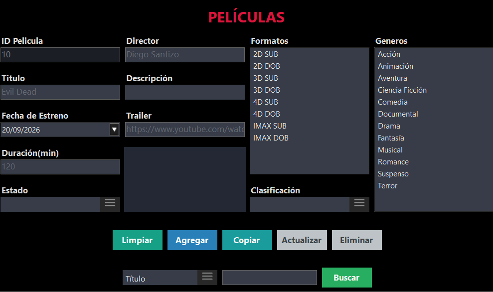

Proceso Peliculas
El proceso de Peliculas tiene como objetivo registrar una nueva Pelicula al sistema. Para ello debemos dirigirnos al menú de Funciones y luego seleccionamos la opción Peliculas.

Formulario
En la siguiente Figura podremos observar el Formulario que debemos llenar.
